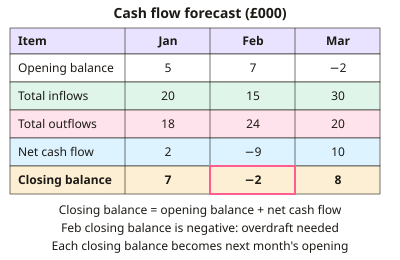

A-level Business Year 12 · Topic 8
Managing finance and financial performance
This topic is about managing finance day to day, and judging how well a business is performing.
We work with cash-flow forecasts, working capital, income statements and the balance sheet, and calculate the key ratios.
We also appraise investments, and look at why businesses fail and the limits of financial data.
- 8 subtopics
- 409 questions
- Free: 8.1 notes and 9 questions
In this topic
- 8.1Cash flow forecasts: construction, interpretation and limitationsFree below · 61 questions
- 8.2Managing cash flow and liquidity: working capital and ways to improve cash flowOpen in Full Marks · 61 questions
- 8.3Income statements and profit: gross, operating and net profit and profit marginsOpen in Full Marks · 44 questions
- 8.4Improving profit: cost reduction and revenue increase strategiesOpen in Full Marks · 24 questions
- 8.5Statement of financial position (balance sheet): assets, liabilities and capitalOpen in Full Marks · 54 questions
- 8.6Financial ratio analysis: liquidity ratios, ROCE and gearingOpen in Full Marks · 40 questions
- 8.7Investment appraisal: payback and average rate of returnOpen in Full Marks · 70 questions
- 8.8Business failure, insolvency and the limitations of financial dataOpen in Full Marks · 55 questions
8.1 · Free notes
Cash flow forecasts: construction, interpretation and limitations

Key points
- A cash flow forecast predicts the cash inflows (receipts) and cash outflows (payments) of a business over a future period, usually month by month for 6–12 months.
- Inflows include cash sales, receipts from credit customers, loans, capital injections and sales of assets. Outflows include wages, materials, rent, utilities, loan repayments, tax, dividends and capital expenditure.
- Net cash flow = total inflows − total outflows. Closing balance = opening balance + net cash flow, and each month's closing balance becomes the next month's opening balance.
- Cash is recorded when it is actually received or paid, not when the sale or purchase is made. Credit sales (e.g. 30 or 60 days) therefore appear in later months. Non-cash items such as depreciation are excluded.
- Cash flow is not profit. A business can be profitable but run out of cash, for example when customers pay late or too much is spent on inventory. Insolvency means being unable to pay debts as they fall due.
- To interpret a forecast, look for a negative closing balance (an overdraft or other finance is needed). Also look at the size and timing of deficits, seasonal patterns and the trend in the closing balance.
- Uses: spot cash shortfalls early, support loan or overdraft applications (lenders want evidence of ability to repay), plan spending and compare actual with forecast figures (variances).
- Limitations: it relies on estimates and assumptions, especially the sales forecast. Unexpected events (new competitors, cost rises, bad debts, late payers) cause errors, and start-ups lack trading history to base forecasts on.
- A forecast only identifies problems; it does not solve them. Reliability falls the further ahead it looks, so regular updating improves accuracy.
- Exam technique: show your working, state units (£ or £000) and link the figures to a cause and a consequence (e.g. a deficit in February means an overdraft is needed to pay wages).
In more detail
- Credit timing: a firm sells £12,000 of goods in January on 60 days' credit → the cash arrives in March, so January's forecast shows no inflow from that sale.
- Worked three months: opening balance £3,000 and net cash flows of −£5,000, −£2,000 and +£6,000 → closing balances of −£2,000, −£4,000 and +£2,000, so an overdraft of at least £4,000 is needed.
- Sensitivity check: rerun the forecast with sales 10% lower. If the balance then goes deeply negative, the plan is risky.
- Depreciation is not cash: depreciation reduces profit but never appears in a cash-flow forecast, because no money leaves the business.
Practice
Cash flow forecasts: construction, interpretation and limitations: 9 questions
Pick an answer to check it, or open the answer for the explanation.
1. Which item would NOT appear in a cash flow forecast?
- Cash from selling a vehicle
- Depreciation of machinery
- Repayment of a bank loan
- Payment of wages
Show answer
B: Depreciation of machinery. Depreciation is a non-cash accounting entry, so no money moves and it is excluded. Wages, loan repayments and asset sales all involve cash.
2. A shop sells goods worth £6,000 in March on two months' credit. In which month does the forecast show the £6,000 inflow?
- June
- May
- April
- March
Show answer
B: May. Forecasts record cash when it is received, not when the sale is made. Two months' credit means the money arrives in May.
3. A forecast shows a negative closing balance in February only. What is the most sensible response?
- Close the business immediately
- Ignore it because March is positive
- Increase dividends to shareholders
- Arrange an overdraft or short-term finance for February
Show answer
D: Arrange an overdraft or short-term finance for February. A temporary deficit can be covered by an overdraft or short-term finance, arranged in advance so bills can still be paid. It does not mean closure.
4. What is the main limitation of a cash flow forecast?
- It only shows past performance
- It includes non-cash items such as depreciation
- It relies on estimates and assumptions that may be wrong
- It shows profit rather than cash
Show answer
C: It relies on estimates and assumptions that may be wrong. Forecasts rest on predictions of sales and costs, so errors in these assumptions make the forecast inaccurate, especially further ahead.
5. Why might a bank ask a start-up for a cash flow forecast before agreeing a loan?
- To check the value of its fixed assets
- To calculate the firm's tax bill
- To confirm last year's profit
- To judge whether the firm can meet repayments when due
Show answer
D: To judge whether the firm can meet repayments when due. A forecast shows expected cash inflows and outflows, so the bank can judge whether the firm will have enough cash to pay interest and repay the loan.
6. Which statement about cash flow and profit is correct?
- A profitable business can never have cash problems
- Loss-making firms always have negative cash
- Profit and cash flow are always the same
- A profitable business can still run out of cash
Show answer
D: A profitable business can still run out of cash. Profit includes credit sales not yet paid for, so a profitable firm can lack cash to pay bills, for example if customers pay late or inventory is expensive.
7. An ice-cream maker's forecast shows negative balances from November to February. What should its manager do?
- Stop forecasting in winter
- Arrange finance in advance and save surplus summer cash
- Buy extra inventory in November
- Pay suppliers early in winter
Show answer
B: Arrange finance in advance and save surplus summer cash. Seasonal deficits are predictable, so the firm should plan ahead by building reserves in the high-sales months or arranging an overdraft before it is needed.
8. Why are cash flow forecasts often less reliable for new businesses?
- Banks never accept them
- With no trading history, sales forecasts are uncertain
- They are legally exempt from forecasting
- New businesses have no costs
Show answer
B: With no trading history, sales forecasts are uncertain. Start-ups have no past sales or cost data, so their forecasts rely on guesswork and market research, making errors more likely.
9. A firm receives a £20,000 bank loan in June. How should it appear in the June cash flow forecast?
- Reduction in costs of £20,000
- Cash outflow of £20,000
- Cash inflow of £20,000
- Not shown until it is repaid
Show answer
C: Cash inflow of £20,000. A loan brings cash into the business when received, so it is an inflow in June. Repayments later appear as outflows.
Keep going in Full Marks
Full Marks has 61 questions on Cash flow forecasts: construction, interpretation and limitations (52 more than here), set out in practice levels. You also get notes and 3D models for all 8 subtopics of Managing finance and financial performance, plus games, timed exams and past papers.